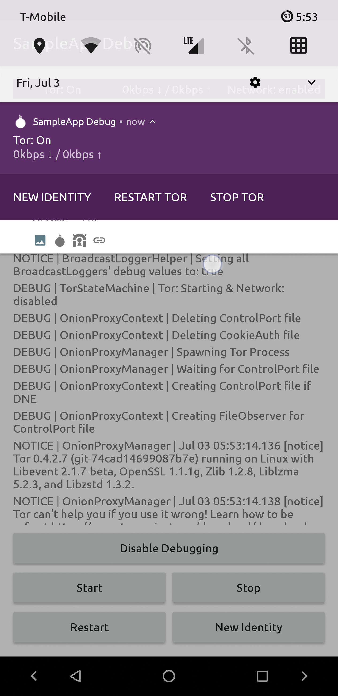
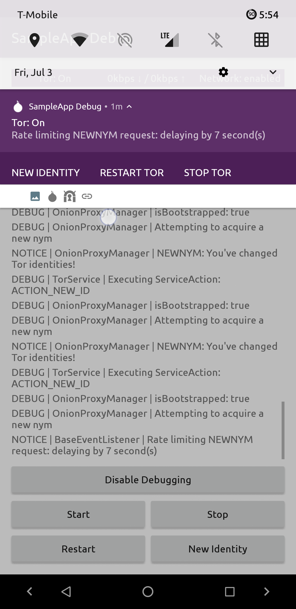
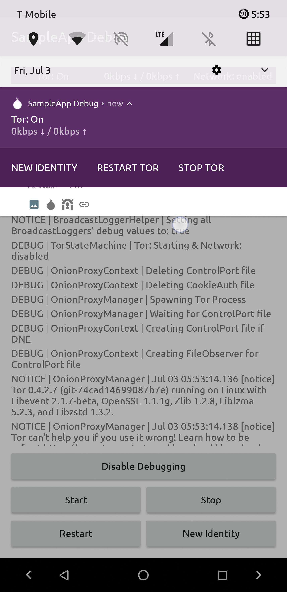
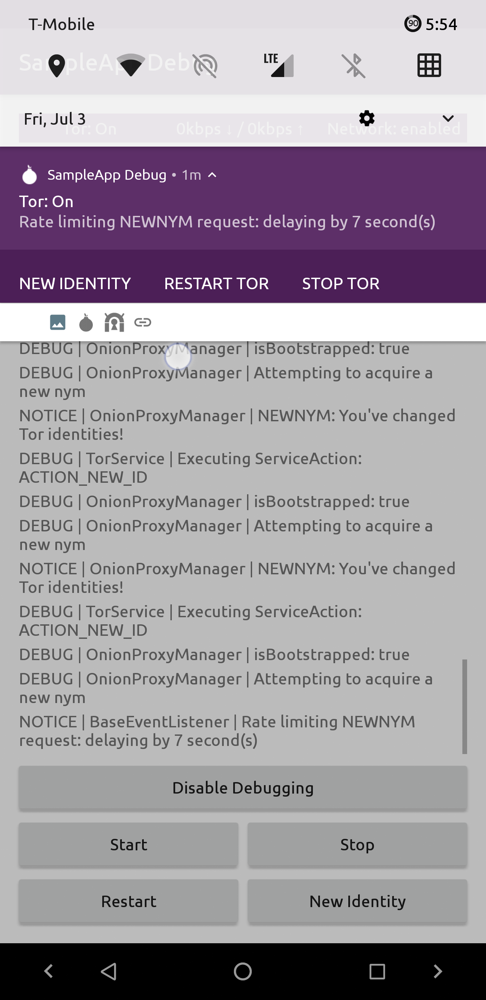

TorOnionProxyLibrary-Android¶
An Android Library for embedding Tor as a service into your Application
NOTE: This project exists independently of the Tor Project, & Guardian Project.
This is a Fork of the Tor_Onion_Proxy_Library project.
 



It’s been re-built from the ground up and engineered specifically for
Android , where it was once multi-platform. It’s been re-written in
Kotlin, heavily refactored to improve reliability/ease of use, and an android.app.Service
built on top as an additional module/Library for abstracting away complexities.
The topl-service module/Library has simple to use APIs for integrating Tor into your
application, and customizing the notification to meet your liking.
Project Roadmap¶
Get started!¶

Other Projects Using It¶
Info
Add your project to the list by submitting a PR!
Edit This Document
License ¶
TorOnionProxyLibrary-Android (a.k.a. topl-android) is a derivation of
work from the Tor_Onion_Proxy_Library project that started at commit
hash 74407114cbfa8ea6f2ac51417dda8be98d8aba86. Contributions made after
said commit hash are:
Copyright (C) 2020 Matthew Nelson
This program is free software: you can redistribute it and/or modify it
under the terms of the GNU General Public License as published by the
Free Software Foundation, either version 3 of the License, or (at your
option) any later version.
This program is distributed in the hope that it will be useful, but
WITHOUT ANY WARRANTY; without even the implied warranty of MERCHANTABILITY
or FITNESS FOR A PARTICULAR PURPOSE. See the GNU General Public License
for more details.
You should have received a copy of the GNU General Public License
along with this program. If not, see
here.
===========================================================================
+++++++++++++++++++++++++++++++++++++++++++++++++++++++++++++++++++++++++++
===========================================================================
The following exception is an additional permission under section 7 of the
GNU General Public License, version 3 (“GPLv3”).
“The Interfaces” is henceforth defined as Application Programming Interfaces
needed to implement TorOnionProxyLibrary-Android, as listed below:
-
From the
topl-core-basemodule:- All Classes/methods/variables
-
From the
topl-service-basemodule:- All Classes/methods/variables
-
From the
topl-servicemodule:- The TorServiceController class and it’s contained classes/methods/variables
- The ServiceNotification.Builder class and it’s contained classes/methods/variables
- The BackgroundManager.Builder class and it’s contained classes/methods/variables
- The BackgroundManager.Companion class and it’s contained methods/variables
The following code is excluded from “The Interfaces”:
- All other code
Linking TorOnionProxyLibrary-Android statically or dynamically with other
modules is making a combined work based on TorOnionProxyLibrary-Android.
Thus, the terms and conditions of the GNU General Public License cover the
whole combination.
As a special exception, the copyright holder of TorOnionProxyLibrary-Android
gives you permission to combine TorOnionProxyLibrary-Android program with free
software programs or libraries that are released under the GNU LGPL and with
independent modules that communicate with TorOnionProxyLibrary-Android solely
through “The Interfaces”. You may copy and distribute such a system following
the terms of the GNU GPL for TorOnionProxyLibrary-Android and the licenses of
the other code concerned, provided that you include the source code of that
other code when and as the GNU GPL requires distribution of source code and
provided that you do not modify “The Interfaces”.
Note that people who make modified versions of TorOnionProxyLibrary-Android
are not obligated to grant this special exception for their modified versions;
it is their choice whether to do so. The GNU General Public License gives
permission to release a modified version without this exception; this exception
also makes it possible to release a modified version which carries forward this
exception. If you modify “The Interfaces”, this exception does not apply to your
modified version of TorOnionProxyLibrary-Android, and you must remove this
exception when you distribute your modified version.